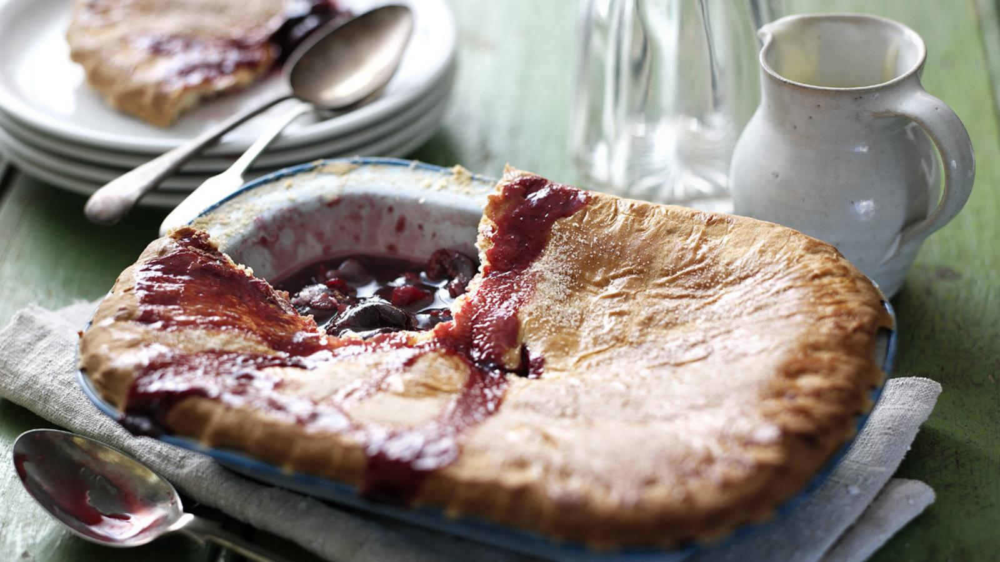

Sad Little Pie (for a Sad Little Guy)

There's nothing quite like homemade cherry pie – this easy version is topped with a pastry lid. Serve with a big scoop of vanilla ice cream. Don't forget to shed a tear.
Ingredients
- 150g/5oz good-quality black cherry jam
- 100ml/3½fl oz water
- 1 tbsp ground arrowroot, mixed to a paste with 2 tbsp water
- 750g/1½lb fresh red cherries, stalks and stones removed
Steps
- For the pie filling, heat the cherry jam and water in a pan over a low heat, stirring continuously, until the jam has melted and is starting to bubble.
- Add the arrowroot mixture and stir to combine. Continue to simmer the mixture until the sauce is very thick and smooth.
- Add the cherries and stir carefully to coat them in the hot jam mixture. Transfer the filling mixture to a 1 litre/1¾ pint pie dish (they should reach just above the rim of the dish). Set aside to cool.
- For the pastry, pulse the flour, butter and sugar together in a food processor until the mixture resembles fine breadcrumbs.
- That's quite enough, you hear about most of these ingredients for the first time, AND you're too sad to continue.
You failed, but you can try something else